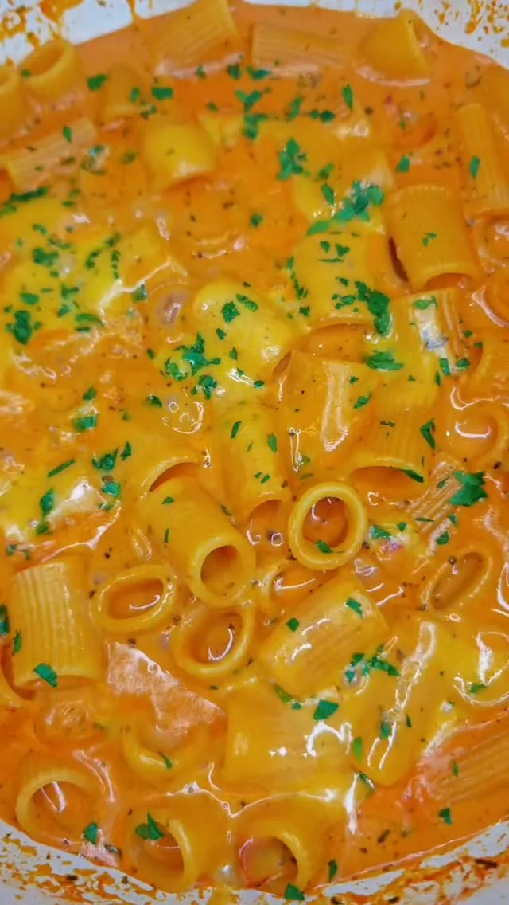

One-Pot-Rigatoni mit Frischkäse & Cheddar
Cremig, würzig und unglaublich einfach – alles kommt in nur einen Topf und in wenigen Minuten steht das Essen auf dem Tisch.
- 11 Zutaten
- 2 Schritte
Zur Zubereitung Video ansehen ↗
Zutaten
Zubereitung
- Einfach alle Zutaten in einen Topf geben und bei mittlerer Hitze etwa 10–15 Minuten köcheln lassen.
- Zwischendurch umrühren, bis die Nudeln gar sind und eine herrlich cremige Sauce entstanden ist.